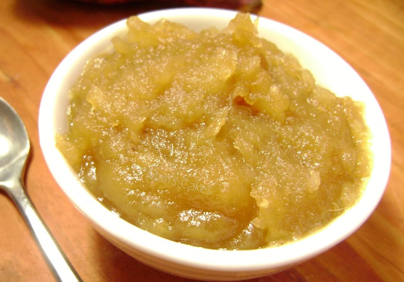

<!DOCTYPE html>
<html lang="es">
   
  <head>
        <meta charset="UTF-8">
       
        <title> </title>


    </head>

    <body>

    </body>
    <h1>Bandera dominicana.</h1>
    
    <h2>Un delicioso postre de la gastronomia dominicana.</h2>
    
    <h3>Ingredientes:</h3>
    <ol>Un coco.</ol>
    <ol>Malagueta.</ol>
    <ol>Canela.</ol>
    <ol>Azucar.</ol>

    <h3> Preparacion:</h3>
    <ol>Ralle el coco.</ol>
    <ol>Ponga el coco a hervir con poco de agua</ol>
    <ol>Agregue el azucar .</ol>
    <ol>Agregue la malagueta y la canela.</ol>
    <ol>Dejar en fuego medio hasta que este listo.</ol>
    


        


</html>